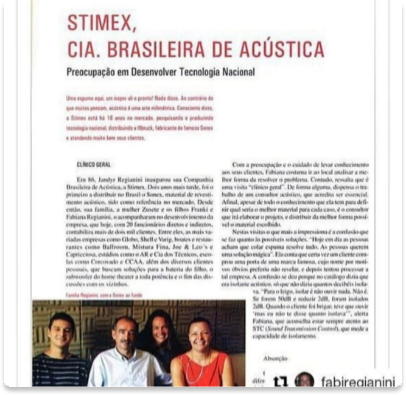
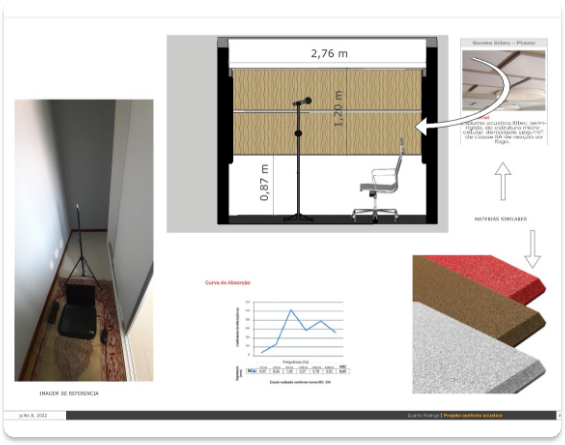

Serviços
Projeto
Anamnese, com visita presencial ao local. Medição com aparelhos especificos, de acordo com as normas nacionais e internacionais existentes. É então entregue um projeto arquitetônico de acordo com os melhores conceitos e práticas acústicas.
Consultoria
O cliente envia fotos do local e/ou caracteristicas para o arquiteto. É feita uma análise técnica, onde o arquiteto irá indicar o que se deve ser feito (por escrito) para que se tenhao resultado desejado pelo cliente. Este serviço não inclui um projeto
Assessoria
Na assessoria, o cliente tem uma conversa profunda com o arquiteto almejando o aprendizado de técnicas arquitetônicas e acústicas, para que ele, por conta própria, execute, com base no aprendizado, o resultado que ele deseja. Não inclui um projeto
Laudo Acústico
É feito um laudo para atestação de um trabalho de solução acústica em local determinado pelo cliente. É feito o uso de equipamentos acústicos de medição e precisão, com base nas normas internacionais e nacionais
Contato
Entre em contato conosco
Sobre Nós

Franki Silveira Regianini
Arquiteto acústico
Fundador - Niterói, RN | Brazil
Conselho de Arquitetura e Urbanismo (CAU):
A 94826-8 RJ
CNPJ:
36.853.226/0001-82
“Meu nome é Franki S. Regianini. Sou arquiteto urbanista, especializado em conforto ambiental, com ênfase em acústica arquitetônica. Comecei trabalhando na empresa de minha família, a Stimex Cia Brasileira de Acústica em 1989, quando tive os primeiros contatos com a acústica arquitetônica, ligado primeiramente em adequação de espaços internos para reverberação ideal dos ambientes, sendo nós, os primeiros representantes brasileiros do Sonex, material absorvente mundialmente conhecido, fabricado pela empresa Alemã ILLbruck, detentora da marca."

"Logo depois, começamos a distribuir os isolamentos de vibração da GERB, outra empresa alemã com mais de 100 anos de experiencia nessa área. Fui me aprofundando na área, estudando acústica, principalmente a parte de reverberação e isolamento acústico, participando de seminários, cursos na SOBRAC (Sociedade Brasileira de Acústica) e os ministrados pelas empresas nas quais representávamos."

"Depois comecei a me aperfeiçoar, juntamente com a acústica física de uma nova e revolucionária abordagem da acústica: a psicoacústica, que estuda a relação do ruído com o ser humano e a relação do ser humano com o ruído e como ele afeta direta e indiretamente o indivíduo"
Veja aqui as normas que utilizamos para executar nossos serviços de medição, e alguns livros estudados pela nossa equipe